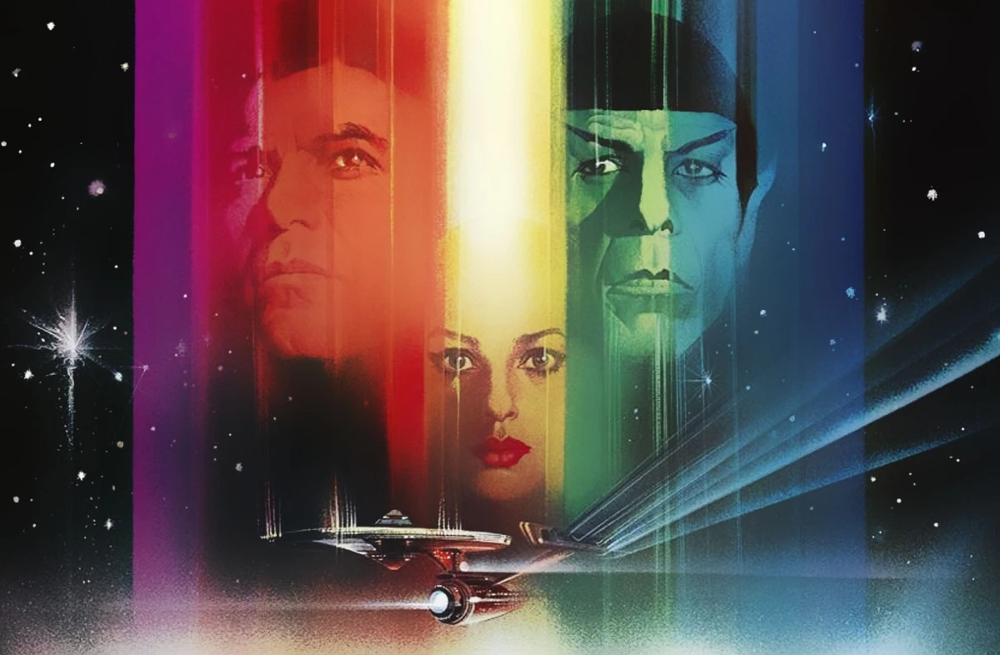
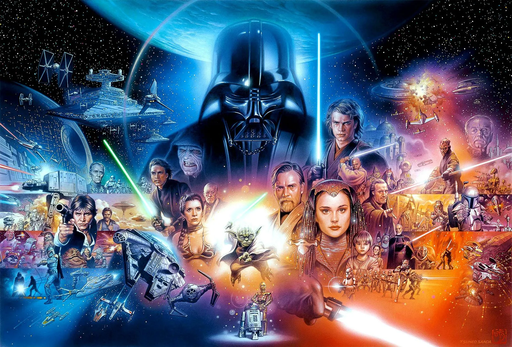
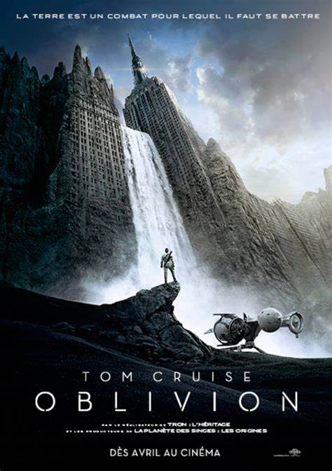

There is a personal page of a good human being - Valeriia Onyshchenko
Let's look closer! Who is she?
Valeriia Onyshchenko is a 19 years old ukrainian girl, who currently lives in a war state country. Kinda challenging, right? By the way, it would be better to call her Lera..
She is taking BA degree in Philosophy in University of Kyiv-Mohyla Academy, but her interests go futher - to the multiple disciplines.
There are some of them:
Religion;
Sociology;
Psychology;
History and Archeology;
Physics;
IT.
Books and films are her passion and the only way to escape from boring routine.
Her favorite genres are Sci-fi and fantasy, as well as history and dystopia.
TOP-3 best Sci-fi stories from Lera:
Star Treck

Star Trek is an American science fiction media franchise created by Gene Roddenberry, which began with the eponymous 1960s television series and became a worldwide pop-culture phenomenon.
Star Treck offician site - is a good source of information for thoose who want to get into the world of the series.
Star Wars

Well known franchise that created a huge world and fanbase.
Star Wars Official site - you may find a lot of interesting stuff here.
Oblivion

Oblivion is a 2013 American post-apocalyptic action-adventure film. Based on Kosinski's unpublished graphic novel of the same name, the film pays homage to 1970s sci-fi, and is a love story set in 2077 on an Earth desolated by an alien war.
IMDB page on Oblivion.